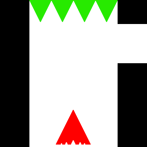

Project overview
Have you ever thought navigating a deadly maze was too easy? Well now you can do it without seeing where you’re going until it’s too late. Slider is a puzzle/maze game where all you need to do is move the arrow from the start to the end. There’s just one slight problem. You don’t actually move until you stop telling it where to move. So, have fun trying to judge the distance you’re going based on how long you hold down the key for!
